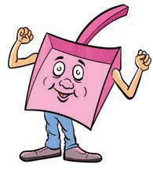

Activity 2
Observe the following cartoons, then boast about items for caring for the environment by mentioning their uses.
I am a dustbin, I store waste.
 A smiling dustbin with arms and legs for keeping waste.
A smiling dustbin with arms and legs for keeping waste.
I am a dustpan, I collect dust and waste and take them to the dustbin.

A smiling dustpan with arms and legs for collecting dust and rubbish.